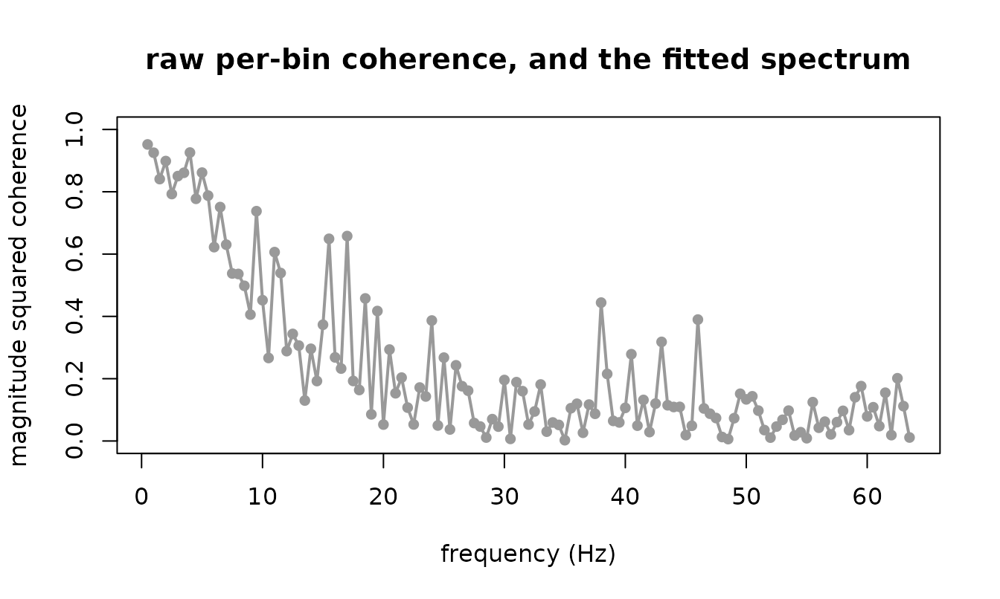

Two signals are recorded from each of forty people. You want to know how strongly they are coupled, at which frequencies, and whether the coupling differs between two groups.
The usual answer is a two-stage pipeline: estimate each person’s coherence, then test the estimates. This article shows what that costs, on data whose truth is known, and what one hierarchical fit gives instead.
Why the usual answer is wrong
Coherence from n segments is biased upward by roughly
(1 - C)^2 / n. At a true coherence of zero the estimate has
mean exactly 1/n, so a person with 4 segments reads 0.25
when the truth is nothing at all.
Two things are usually done about it, and both fail.
Averaging over people does not help. The mean of forty biased numbers carries the same bias, because the bias is in each number rather than in the spread.
one_unit <- function(n, coh, phase, la = 0, lb = 0) {
a <- exp(la); b <- exp(lb); cm <- b * sqrt(coh / (1 - coh))
z1 <- complex(real = rnorm(n, 0, sqrt(0.5)), imaginary = rnorm(n, 0, sqrt(0.5)))
z2 <- complex(real = rnorm(n, 0, sqrt(0.5)), imaginary = rnorm(n, 0, sqrt(0.5)))
d1 <- a * z1
d2 <- cm * complex(modulus = 1, argument = -phase) * z1 + b * z2
cr <- sum(d1 * Conj(d2))
c(w11 = sum(Mod(d1)^2), w22 = sum(Mod(d2)^2),
w12r = Re(cr), w12i = Im(cr), n = n)
}
naive_mean <- function(N, n, coh) {
m <- t(replicate(N, one_unit(n, coh, 0.5)))
mean((m[, "w12r"]^2 + m[, "w12i"]^2) / (m[, "w11"] * m[, "w22"]))
}
round(sapply(c(2, 4, 8, 16, 32), function(n) naive_mean(400, n, 0.2)), 3)
#> [1] 0.572 0.393 0.277 0.244 0.229The truth is 0.2 in every one of those. Four segments reads about 0.39.
Concatenating everyone’s segments is worse. Pooling is valid only if every person has the same spectral matrix. Once phase varies between people, the cross terms cancel:
N <- 40; n <- 8
u <- t(replicate(N, one_unit(n, 0.5, rnorm(1, 0.8, 0.8))))
pooled <- (sum(u[, "w12r"])^2 + sum(u[, "w12i"])^2) /
(sum(u[, "w11"]) * sum(u[, "w22"]))
c(truth = 0.5, naive_mean = mean((u[, "w12r"]^2 + u[, "w12i"]^2) /
(u[, "w11"] * u[, "w22"])),
pooled = pooled)
#> truth naive_mean pooled
#> 0.5000000 0.5668223 0.2977686Pooling reads far below the truth, and unlike the naive bias it does not shrink with more segments, because it is cancellation rather than variance.
Where this package does not help
The bias is roughly (1 - C)^2 / n, so it vanishes as the
coupling gets strong. Here is the naive bias at 4 segments across three
true coherences:
round(sapply(c(0.2, 0.5, 0.9), function(C) naive_mean(2000, 4, C)) -
c(0.2, 0.5, 0.9), 3)
#> [1] 0.175 0.085 0.004At a true coherence of 0.9 the bias is a few thousandths against 0.175 at 0.2. There is nothing to correct up there, and this package buys you nothing for it.
The whole argument lives at low to moderate coherence, which is also where most real cortico-muscular and cortico-cortical couplings sit. If your coherences are all above about 0.8, fit whatever is convenient and report it; the reason to come here is a hierarchical question, an interval you trust, or a group comparison, not the bias.
The model
The pair’s periodogram at one frequency is complex Wishart about the
spectral matrix. cross_wishart() is that likelihood,
parameterized so its four distributional parameters are the two channel
powers, the coherence and the phase. Each takes a formula, so a random
effect on coherence is written the way any random effect is written.
xs <- as.data.frame(t(replicate(N, one_unit(n, 0.5, rnorm(1, 0.8, 0.8),
la = rnorm(1, 0, 0.3),
lb = rnorm(1, 0, 0.3)))))
xs$id <- factor(seq_len(N))
head(xs, 3)
#> w11 w22 w12r w12i n id
#> 1 11.883109 6.461627 0.2445355 6.129594 8 1
#> 2 7.473119 29.736050 5.2062126 12.518727 8 2
#> 3 5.495194 7.463301 2.3805728 3.623912 8 3
fit <- frm(bf(w11 | vreal(w22, w12r, w12i) + vint(n) ~ 1 + (1 | id),
pow2 ~ 1 + (1 | id),
coh ~ 1 + (1 | id),
phase ~ 1 + (1 | id)),
family = cross_wishart(), data = xs)
frm_coherence(fit, newdata = xs[1, ], re.form = NA)
#> .estimate .se .lower .upper .eta
#> 1 0.4695287 0.1226127 0.4103901 0.5295356 -0.1220363The interval is a Wald interval on the logit scale pushed through
plogis(), so it cannot leave (0, 1) however
close to a boundary the estimate sits. That boundary is where the
arithmetic has to be careful: plogis(eta) is exactly 1 in
double precision above about eta = 36.7, so the density
never forms 1 - C by subtraction. It asks core for
log(1 - C) with frmtmb::dpar_log1m(), which
reads the linear predictor core keeps beside each parameter and is exact
to eta = 709. A draft of this package did subtract, and
returned NaN above eta = 36.7 and a confidence
interval of width zero for two signals that differed only by 1e-5 of
noise.
Put a random effect on every parameter, not only on coherence
The two channel powers are incidental parameters: two free numbers per person that gain no information as people are added. Left free, they starve the coherence variance component, which collapses to zero without a warning; the fit converges and its interval covers 62 percent of the time instead of 95.
| what carries a random effect | bias at n = 4 | 95% coverage |
|---|---|---|
| coherence and phase only, powers free per person | +0.068 | 0.622 |
| all four parameters | +0.008 | 0.912 |
Measured over 150 replicates, 40 people;
dev/xspec-findings.md in the repository has the full table.
It is the failure that looks most like success.
From signals to rows
frm_cross_spectrum() does the data preparation,
including the parts that are easy to get wrong and impossible to notice:
it drops frequency zero and the Nyquist frequency, whose coefficients
are real rather than complex, and it counts the degrees of freedom
honestly.
sfreq <- 128
src <- as.numeric(filter(rnorm(4096), 0.9, method = "recursive"))
a <- src + rnorm(4096, 0, 0.5)
b <- 0.9 * src + rnorm(4096, 0, 2)
sp <- frm_cross_spectrum(a, b, sfreq = sfreq, segments = 16)
head(sp, 3)
#> freq w11 w22 w12r w12i n
#> 1 0.5 1678.5668 1453.5994 1522.6362 65.39112 16
#> 2 1.0 927.8641 764.1049 809.0603 -38.48858 16
#> 3 1.5 641.8278 554.8955 547.1008 10.59337 16Segments, sine tapers and frequency smoothing all buy real degrees of
freedom, and all three deliver the nominal count to within 2 percent on
white noise. tapers and smooth may not both
exceed 1: they widen the same spectral window, so their product is not
the count. Four tapers smoothed over four bins buys 5.8 draws, not
16.
The one trap
The likelihood couples the powers and the coherence. A power formula too simple for the spectrum does not merely leave the powers wrong; it reweights the rows each coherence parameter pools and moves the coherence with them.
sp$band <- factor(ifelse(sp$freq < 32, "low", "high"), c("low", "high"))
flat <- frm(bf(w11 | vreal(w22, w12r, w12i) + vint(n) ~ 1,
pow2 ~ 1, coh ~ band, phase ~ 1),
family = cross_wishart(), data = sp)
#> Warning: Large maximum absolute gradient at the optimum (0.00116); the fit may
#> not have converged. diagnose() names the offending parameter; see the
#> 'Convergence problems' section of vignette('diagnostics') for the remediesNothing warned about the thing that matters. The fit may report a
large maximum absolute gradient, which is about the optimizer and not
about this; core raises it on Gamma(link = "log") fits of
the same response too, and it is seed dependent. What it does NOT say is
that the coherence you are about to read has been displaced.
There is no automatic check for it, and that is deliberate. A draft
of this package warned from a fit_check hook that measured
the spread of the power residuals, and that statistic turned out not to
track the coherence displacement: it stayed silent at a 2.7-fold power
spread where the reported coherence was already nearly double the truth,
and it fired at a ratio of 20.5 on a correctly specified model whose
coherences were right. A check that punishes correct models teaches
people to ignore it, so it was withdrawn.
Compare AIC instead. Fit the powers with and without a frequency term and keep the one AIC prefers:
good <- frm(bf(w11 | vreal(w22, w12r, w12i) + vint(n) ~ s(freq, k = 8),
pow2 ~ s(freq, k = 8), coh ~ band, phase ~ 1),
family = cross_wishart(), data = sp)
nd <- data.frame(band = factor(c("low", "high"), c("low", "high")),
freq = c(16, 48))
rbind(flat = frm_coherence(flat, newdata = nd)$.estimate,
good = frm_coherence(good, newdata = nd)$.estimate)
#> [,1] [,2]
#> flat 0.4579340 0.40876097
#> good 0.3591103 0.04314377
c(AIC_flat = AIC(flat), AIC_good = AIC(good), delta = AIC(flat) - AIC(good))
#> AIC_flat AIC_good delta
#> 8490.902 4089.772 4401.130The shared source is low-pass, so the low band really is the coherent one. The flat fit calls the two bands nearly equal; the well specified one separates them, and AIC prefers it by thousands.
The comparison works where the withdrawn hook did not. On a two-band
design at n = 8 with true coherences 0.35 and 0.05, varying
how much the power slopes across the record:
| power spread | flat powers report | correct powers report | delta AIC |
|---|---|---|---|
| 1.6x | 0.295, 0.083 | 0.330, 0.068 | 80 |
| 2.7x | 0.268, 0.078 | 0.342, 0.041 | 487 |
| 7.3x | 0.240, 0.206 | 0.342, 0.047 | 1849 |
| 19.6x | 0.229, 0.458 | 0.341, 0.052 | 3716 |
| 385x | 0.222, 0.875 | 0.342, 0.059 | 11518 |
AIC rejects the flat model by 80 or more even at the mildest spread, and the correct model recovers 0.35 and 0.05 throughout. Model the powers before reading any coherence.
A coherence spectrum
Coherence that varies with frequency is a smooth on coh.
It cannot leave (0, 1) at any point on the smooth, because
the logit link is the positive definiteness constraint rather than a
convenience.
spec <- frm(bf(w11 | vreal(w22, w12r, w12i) + vint(n) ~ s(freq, k = 10),
pow2 ~ s(freq, k = 10), coh ~ s(freq, k = 10), phase ~ 1),
family = cross_wishart(), data = sp)
co <- frm_coherence(spec)
range(co$.lower)
#> [1] 0.009043064 0.884928056
range(co$.upper)
#> [1] 0.05689555 0.93557525
The grey points are each bin’s own coherence, every one of them
biased upward by about 1/16; the line is the fitted
spectrum, which borrows strength across frequency and does not have to
be.
Checking the fit
simulate() refuses on this family, and says why: a draw
is a whole Hermitian matrix and the response slot carries one of its
four numbers, so a simulated w11 sitting beside the
observed rest is not a draw from anything.
frm_cross_simulate() returns all four columns.
rep1 <- frm_cross_simulate(spec, nsim = 1, seed = 3)[[1]]
str(rep1)
#> 'data.frame': 127 obs. of 5 variables:
#> $ w11 : num 713 549 1267 851 558 ...
#> $ w22 : num 609 370 1235 737 598 ...
#> $ w12r: num 621 429 1210 750 539 ...
#> $ w12i: num -32.7 36.8 42.9 -21.2 -47.9 ...
#> $ n : num 16 16 16 16 16 16 16 16 16 16 ...
all(rep1$w11 * rep1$w22 - rep1$w12r^2 - rep1$w12i^2 > 0)
#> [1] TRUEEvery draw is positive definite, so a replicate can be refitted rather than merely plotted.
What this does not do
-
More than two channels. This is a scope decision of
this package and not a limit of
frmtmb: core carries a matrix-valued response and a custom family readingy[, 1]andy[, 2]fits today. What stops it here is thatpchannels needp^2linear predictors written by hand, that the cleanpower, power, coherence, phasecoordinates do not survive past two, and that the log determinant and trace stop being closed forms. Fit pairs. Note that a matrix pair passed tofrm_cross_spectrum()is many UNITS of one channel pair, never many channels. - Non-stationary epochs. Everything here assumes the spectral matrix is constant over the record a segment is cut from. A time-varying coupling needs segmentation or a different formulation.
- Phase-amplitude coupling. That is a higher-order property and needs the bispectrum, which is not this framework.
- Overlapping segments. Refused, because overlap raises the nominal degrees of freedom without raising the independent ones, and every standard error downstream would be too small.